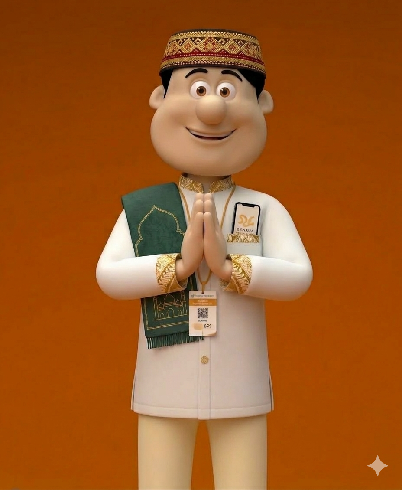

Dashboard penambahan usaha SBR sedang dalam maintenance. Kami sedang melakukan peningkatan sistem untuk pelayanan yang lebih baik.
Akan kembali aktif pada:
24 Maret 2026
"Taqabalallahu Minna wa minkum"
Semoga amal ibadah kita diterima oleh Allah SWT. Mohon maaf lahir dan batin.
© 2026 Badan Pusat Statistik Provinsi Lampung